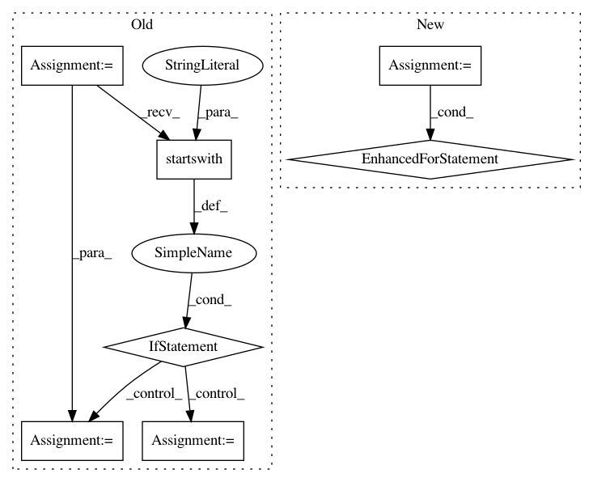

3d091b43f5c817709299d6cdfb95d4b72b356ca4,src/sagemaker/local/image.py,_SageMakerContainer,_prepare_serving_volumes,#_SageMakerContainer#Any#,300
Before Change
host_dir = os.path.join(self.container_root, host)
os.makedirs(host_dir)
if model_location.startswith("s3"):
container_model_dir = os.path.join(self.container_root, host, "model")
os.makedirs(container_model_dir)
parsed_uri = urlparse(model_location)
filename = os.path.basename(parsed_uri.path)
tar_location = os.path.join(container_model_dir, filename)
sagemaker.utils.download_file(parsed_uri.netloc, parsed_uri.path, tar_location, self.sagemaker_session)
if tarfile.is_tarfile(tar_location):
with tarfile.open(tar_location) as tar:
tar.extractall(path=container_model_dir)
volumes.append(_Volume(container_model_dir, "/opt/ml/model"))
else:
volumes.append(_Volume(model_location, "/opt/ml/model"))
return volumes
def _generate_compose_file(self, command, additional_volumes=None, additional_env_vars=None):
Writes a config file describing a training/hosting environment.
After Change
host_dir = os.path.join(self.container_root, host)
os.makedirs(host_dir)
model_data_source = sagemaker.local.data.get_data_source_instance(
model_location, self.sagemaker_session)
for filename in model_data_source.get_file_list():
if tarfile.is_tarfile(filename):
with tarfile.open(filename) as tar:
tar.extractall(path=model_data_source.get_root_dir())
volumes.append(_Volume(model_data_source.get_root_dir(), "/opt/ml/model"))
return volumes
In pattern: SUPERPATTERN
Frequency: 3
Non-data size: 7
Instances
Project Name: aws/sagemaker-python-sdk
Commit Name: 3d091b43f5c817709299d6cdfb95d4b72b356ca4
Time: 2018-11-02
Author: nacho950@gmail.com
File Name: src/sagemaker/local/image.py
Class Name: _SageMakerContainer
Method Name: _prepare_serving_volumes
Project Name: stanfordnlp/stanza
Commit Name: f25d9afd2572b98c56c3f597ad8da2648cd7b663
Time: 2020-12-01
Author: horatio@gmail.com
File Name: stanza/utils/training/common.py
Class Name:
Method Name: main
Project Name: CyberReboot/NetworkML
Commit Name: d3babe1252d05f07e58a6602b47e1a09bbd56af5
Time: 2019-12-10
Author: josh@vandervecken.com
File Name: networkml/parsers/pcap/reader.py
Class Name:
Method Name: packetizer